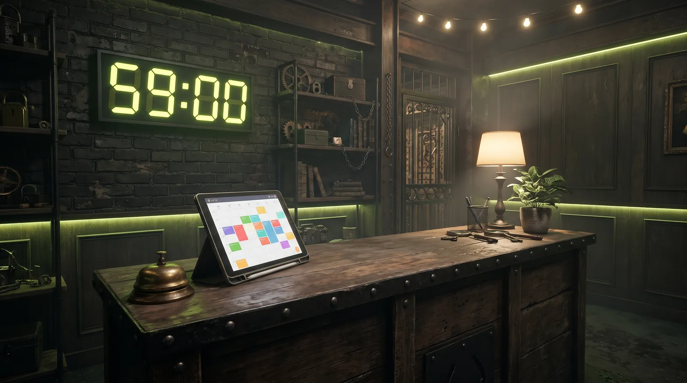

Contacto
Ven a vernos (y a quedarte encerrado)

Dirección
Calle del Candado 13
28012 Madrid
Metro Tirso de Molina (L1)
Horario
Lunes a jueves: 16:00 a 23:00
Viernes a domingo: 10:00 a 01:00
Escríbenos
hola@noexitrooms.example
Para reservas, bonos o incidencias, mejor por ticket.
Aquí irá el mapa (Google Maps u OpenStreetMap).
Soporte por tickets
Inicia sesión y abre un ticket. Verás el estado en todo momento y todas las respuestas quedan guardadas en tu área de cliente.
Abrir un ticket Crear una cuenta